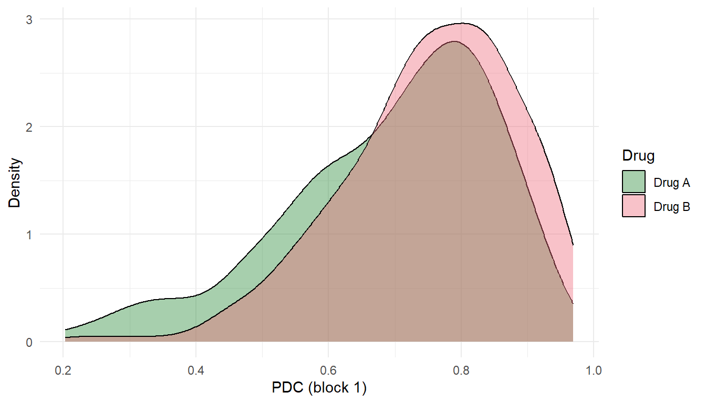
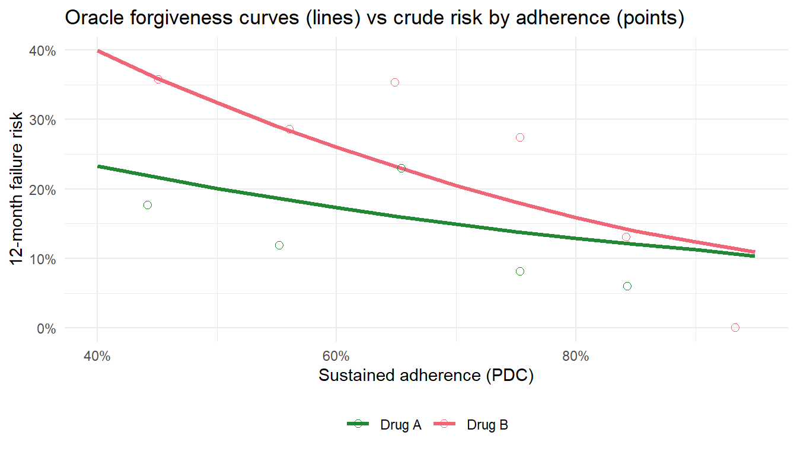

From adherence thresholds to intervention-defined forgiveness curves
Estimated reading time: 55 minutes
17 What this chapter is about
The previous chapters introduced longitudinal TMLE for static interventions (“always maintain high adherence”) and LMTP for modified treatment policies. This chapter brings those tools to bear on a clinically important question: how do two antiretroviral drugs compare when we account for realistic adherence patterns? It focuses on the adherence- and forgiveness-specific shift methods; for the full end-to-end LMTP workflow on a dynamic treatment rule, from question to estimate, see Chapter 20.
The key concept is regimen forgiveness: a drug is forgiving if patients can miss some doses without a large increase in treatment failure. A drug with a flat adherence-response curve is forgiving; one with a steep curve is not. Forgiveness is a causal quantity, not an observable property of the data, because the adherence-response relationship is confounded by time-varying health status.
We use a simulated two-drug HIV cohort designed to capture the essential features of the adherence problem: treatment-confounder feedback between adherence and health, differential forgiveness across drugs, and the positivity challenges that arise when targeting extreme adherence levels. The simulation is calibrated to real pharmacoepidemiologic settings and uses continuous proportion of days covered (PDC) as the adherence measure.
The figure below previews the quantity we are after. A forgiveness curve plots the counterfactual risk of virologic failure against the adherence level a patient sustains, one curve per drug. The vertical distance between the two curves is the forgiveness gap: how much more a missed-dose pattern costs on the less forgiving regimen. The curve is a causal object, the risk we would see if adherence were set to each level, and it is not the same as the risk we observe among patients who happen to adhere at that level. Those two can diverge sharply, and most of this chapter is about why, and how to estimate the causal version.
Show code
library(ggplot2)adh <-seq(0.30, 1, length.out =150)data.frame(adherence =rep(adh, 2),risk =c(plogis(-3+4.5* (1- adh)),plogis(-3+4.5* (1- adh) -0.8* (1- adh))),Drug =rep(c("Drug B (less forgiving)", "Drug A (more forgiving)"), each =150)) |>ggplot(aes(adherence, risk, color = Drug)) +geom_line(linewidth =1.2) +annotate("segment", x =0.5, xend =0.5, y =0.16, yend =0.55,linetype ="dashed", color ="grey40") +annotate("text", x =0.52, y =0.36, label ="forgiveness\ngap",hjust =0, size =3.4, color ="grey40") +scale_x_continuous(labels = scales::percent) +scale_y_continuous(labels = scales::percent) +scale_color_manual(values =c("Drug B (less forgiving)"="#EE6677","Drug A (more forgiving)"="#228833")) +labs(x ="Sustained adherence (PDC)", y ="Virologic failure risk", color =NULL) +theme_minimal() +theme(legend.position ="bottom")
Figure 17.1: An illustrative forgiveness curve. Counterfactual failure risk rises as sustained adherence falls, and it rises faster for the less forgiving regimen. The vertical distance is the forgiveness gap. This is the causal quantity the chapter estimates; the curve here is a stylized illustration, not yet an estimate from data.
18 The clinical question
Consider two antiretroviral regimens for HIV treatment:
Drug A (e.g., a long-acting formulation): pharmacologically forgiving, meaning that occasional missed doses have a smaller impact on viral suppression.
Drug B (e.g., a short half-life oral regimen): less forgiving, where missed doses lead to faster viral rebound.
In practice, both drugs are prescribed and adherence varies. The adherence distributions may differ across drugs (one may be easier to take consistently), and the clinical consequences of low adherence differ (one may be more forgiving). The causal question is: how much of the observed outcome difference between drugs is due to adherence patterns versus pharmacological forgiveness?
This question requires separating three components:
Adherence distribution: Do Drug A and Drug B patients adhere at different rates?
Forgiveness: At any given adherence level, does one drug produce better outcomes than the other?
Adherence-mediated effect: How much of the total drug difference operates through the adherence pathway?
Each component requires longitudinal causal methods because adherence and health co-evolve over time.
19 Why this needs a causal method
Adherence is measured after treatment starts and changes over time, and it sits in a feedback loop with health. Worse health lowers adherence through side effects and complications; lower adherence worsens virologic control; and worse control feeds back into health, which shapes the next period’s adherence. The variable that confounds the adherence-to-failure relationship, current health status \(L_t\), is therefore also a consequence of past adherence.
flowchart LR
W["W0, A0<br/>baseline, drug"] --> L1["L1<br/>health"]
L1 --> P1["PDC1<br/>adherence"]
P1 --> Y["Y<br/>failure"]
L1 --> Y
P1 --> L2["L2<br/>health"]
W --> L2
L2 --> P2["PDC2<br/>adherence"]
P2 --> Y
L2 --> Y
Figure 19.1: Two blocks of the adherence process. Health status L at each block confounds the adherence-to-failure relationship and is itself moved by prior adherence (the feedback arrow from PDC1 to L2). A regression that conditions on L removes the confounding but also blocks the pathway through which past adherence acts; a regression that omits L leaves the confounding in place.
This is the dilemma that defeats ordinary regression. Conditioning on observed adherence adjusts for the health-status confounding and, at the same time, blocks the adherence effect we want to measure, because that effect runs through health. Leaving health out of the model leaves the confounding in place. No single regression can do both. This is exactly the treatment-confounder-feedback setting of Chapter 14, and it is why estimating a forgiveness curve needs the g-methods developed there.
20 The data-generating process
We use a simulation that generates longitudinal data with 90-day blocks over one year (K = 4 blocks). The DGP produces treatment-confounder feedback: poor adherence worsens health (higher L), and worse health reduces future adherence. Drug A is more forgiving at low adherence levels, encoded through a drug-by-adherence interaction in the failure hazard.
Treatment-confounder feedback. Poor adherence (low PDC) at block \(t-1\) worsens health (\(L_t\)), which then reduces adherence at block \(t\) (through alphaL) and independently increases failure risk (through gammaL). This is the same feedback structure discussed in Chapter 14.
Drug-by-adherence interaction (the forgiveness mechanism). The parameter gammaAP = -1.20 means that Drug A’s penalty for poor adherence is smaller than Drug B’s. At high adherence, the two drugs perform similarly. At low adherence, Drug A is more forgiving. This interaction is what makes the forgiveness curve differ between drugs.
Show code
dat |>mutate(Drug =ifelse(A0 ==1, "Drug A", "Drug B")) |>ggplot(aes(x = PDC_1, fill = Drug)) +geom_density(alpha =0.4) +labs(x ="PDC (block 1)", y ="Density") +scale_fill_manual(values =c("Drug A"="#228833", "Drug B"="#EE6677")) +theme_minimal()

Figure 20.1: PDC distributions at block 1 by drug. Drug A patients have slightly lower mean adherence (the drug assignment shifts the adherence intercept), but Drug A is more forgiving of that lower adherence.
Show code
# Cohort summarydat |>mutate(Drug =ifelse(A0 ==1, "Drug A", "Drug B")) |>group_by(Drug) |>summarise(n =n(),mean_PDC_1 =round(mean(PDC_1), 3),failure_pct =round(100*mean(Y_final), 1),.groups ="drop" ) |>as.data.frame()#> Drug n mean_PDC_1 failure_pct#> 1 Drug A 248 0.692 13.3#> 2 Drug B 252 0.752 23.4
21 Why naive adherence analysis is biased
A naive analysis would stratify patients by observed adherence level and compare outcomes within strata. This is systematically biased because of treatment-confounder feedback: patients with low adherence tend to be sicker (higher \(L_t\)), and sicker patients have higher failure risk regardless of adherence. The naive analysis overestimates the effect of adherence because the low-adherence stratum is enriched for patients who were going to fail anyway.
To see the bias rather than just assert it, compare the crude curve against the truth. Because the data come from a known simulation, we can compute the oracle forgiveness curve: the actual counterfactual failure risk if every patient sustained a given adherence level, obtained by re-running the data-generating process with adherence held fixed and health allowed to respond. Overlaying it on the crude adherence-stratified curve shows the gap.
Show code
# Oracle: counterfactual 12-month failure risk if PDC is held at `a` every block,# for a given drug, with health L allowed to respond to the fixed adherence.oracle_forgiveness <-function(a, drug, n =20000, K =4, seed =99) {set.seed(seed) betaW <-0.30; betaLag <-0.35; betaP <-0.80; sigma_L <-0.50 gamma0 <--3.80; gammaL <-0.50; gammaW <-0.30; gammaP <-2.50; gammaAP <--1.20 W0 <-rnorm(n); A0 <-rep(drug, n) L_prev <-NULL; failed <-rep(FALSE, n)for (t in1:K) {if (t ==1) L_t <- betaW * W0 +rnorm(n, 0, sigma_L)else L_t <- betaW * W0 + betaLag * L_prev + betaP * (1- a) +rnorm(n, 0, sigma_L) lp <- gamma0 + gammaL * L_t + gammaW * W0 + gammaP * (1- a) + gammaAP * A0 * (1- a) failed <- failed | (runif(n) <plogis(lp)) L_prev <- L_t }mean(failed)}pdc_grid <-seq(0.40, 0.95, by =0.05)oracle_df <-do.call(rbind, lapply(c(0, 1), function(d)data.frame(PDC = pdc_grid, Drug =ifelse(d ==1, "Drug A", "Drug B"),risk =vapply(pdc_grid, oracle_forgiveness, numeric(1), drug = d))))naive_df <- dat |>mutate(Drug =ifelse(A0 ==1, "Drug A", "Drug B"),mean_PDC =rowMeans(dplyr::across(dplyr::starts_with("PDC_"))),bin =cut(mean_PDC, breaks =seq(0, 1, 0.1))) |>group_by(Drug, bin) |>summarise(PDC =mean(mean_PDC), risk =mean(Y_final), n =n(), .groups ="drop") |>filter(n >=10)ggplot(oracle_df, aes(PDC, risk, color = Drug)) +geom_line(linewidth =1.2) +geom_point(data = naive_df, aes(PDC, risk, color = Drug), shape =1, size =2.2) +scale_x_continuous(labels = scales::percent) +scale_y_continuous(labels = scales::percent) +scale_color_manual(values =c("Drug A"="#228833", "Drug B"="#EE6677")) +labs(x ="Sustained adherence (PDC)", y ="12-month failure risk", color =NULL,title ="Oracle forgiveness curves (lines) vs crude risk by adherence (points)") +theme_minimal() +theme(legend.position ="bottom")

Figure 21.1: Causal forgiveness curves (lines) versus crude adherence-stratified failure rates (open points). The crude points tend to sit above the causal curve at low adherence and below it at high adherence, because low-adherence patients are sicker for reasons the crude comparison wrongly attributes to adherence. The crude curve is therefore too steep.
The solid lines are the causal forgiveness curves; the open points are the crude failure rates among patients whose average adherence fell in each bin. The crude points tend to sit above the causal curve where adherence is low and below it where adherence is high: low-adherence patients are sicker for reasons the crude comparison attributes to adherence, so it overstates the cost of poor adherence and understates the benefit of good adherence, exactly the bias the feedback loop predicts. Recovering the causal curve requires g-methods that account for that feedback. The L-TMLE chapter (Chapter 14) estimates static adherence regimes that trace this curve at fixed levels; the rest of this chapter develops the feasible-shift approach with LMTP.
22 Two estimands, and the estimator each one needs
The forgiveness question can be made precise in two ways, and they call for different estimators.
The first is a static adherence regime: what would the failure risk be if every patient sustained a fixed adherence level, say low, medium, or high, for the whole year? This is the estimand that traces the forgiveness curve at fixed points, and the longitudinal TMLE of Chapter 14 estimates it. Its weakness is positivity: very few patients actually sustain low adherence, or perfect adherence, across all four blocks, so the data thin out at the ends of the curve.
The second is a feasible shift: what would happen if every patient’s adherence were nudged up by a realistic amount, say 10 percentage points, from wherever it currently sits? This is a modified treatment policy, and LMTP estimates it. Because the shifted adherence stays close to what each patient already does, it respects the support of the data and answers a question an adherence-support program could actually act on.
The two are complementary summaries of the same counterfactual risk surface. The static curve shows the whole shape but needs support at every level; the shift gives a stable, policy-relevant slice near the observed distribution. The positivity problem with static extremes is easy to see directly in the data.
Show code
# How many patients actually sustain low or high adherence across all four blocks?pdc <-as.matrix(dat[, paste0("PDC_", 1:4)])data.frame(regime =c("sustained low (<0.50 every block)", "sustained high (>0.90 every block)"),n_patients =c(sum(rowMeans(pdc <0.50) ==1), sum(rowMeans(pdc >0.90) ==1)),pct =round(100*c(mean(rowMeans(pdc <0.50) ==1),mean(rowMeans(pdc >0.90) ==1)), 1))#> regime n_patients pct#> 1 sustained low (<0.50 every block) 9 1.8#> 2 sustained high (>0.90 every block) 10 2.0
When only a handful of patients sustain an extreme regime, the static forgiveness-curve estimate at that end rests on almost no data, and its confidence interval understates the true fragility. The longitudinal positivity diagnostic in Chapter 12 is the general version of this check. A feasible shift sidesteps the problem, which is the motivation for the LMTP approach below.
23 LMTP estimation: feasible adherence shifts
Rather than targeting extreme static interventions (“force everyone to perfect adherence”), which violate positivity for patients who cannot realistically achieve high adherence, we use LMTP to define feasible adherence shifts (Dı́az et al. 2023).
The shift function increases each patient’s PDC by a fixed amount (e.g., 10 percentage points), capped at 1.0. This stays within the support of the observed data because no patient is assigned an adherence level that is impossible given their covariate history.
The contrast estimates how much the failure rate would change if every patient’s adherence increased by 10 percentage points at each visit. Because lmtp uses outcome_type = "survival", it returns \(P(\text{survive})\), so the risk is \(1 - \theta\). A negative risk difference means the shift reduces failure.
24 Alternative shift approaches
The additive shift is one way to operationalize “what if adherence were better?” Other approaches answer subtly different questions.
24.1 Quantile matching: what if Drug B adhered like Drug A?
This maps each Drug B patient’s adherence to the corresponding quantile of Drug A’s distribution. A patient at the 30th percentile of Drug B adherence gets mapped to the 30th percentile of Drug A adherence. This answers: what would happen to Drug B’s outcomes if its patients had Drug A’s adherence profile?
Add a constant to every Drug B patient’s adherence so that Drug B’s mean matches Drug A’s mean. This is the simplest cross-drug comparison: it shifts the location of the distribution but preserves the shape.
24.3 Fixed additive shift (policy evaluation)
The +10pp shift applied to everyone, regardless of drug. This answers a purely policy question: what would a universal adherence support program achieve? It does not reference the other drug at all and has the strongest positivity properties because the shift is small and uniform.
25 The forgiveness curve
The forgiveness curve maps sustained adherence level to counterfactual failure risk for each drug:
A flat curve means the drug is forgiving (patients can miss doses without large increases in failure risk). A steep curve means small adherence drops produce large outcome differences.
Static-regime L-TMLE traces this curve by estimating the failure risk at a grid of fixed PDC thresholds. The LMTP shift approach provides a complementary view: it estimates the marginal benefit of a small adherence improvement, integrated over the observed adherence distribution. The two approaches are different summaries of the same counterfactual risk surface.
The curve is well-estimated only where there is adequate positivity. Below approximately PDC 0.70, few patients sustain such low adherence for four consecutive blocks, so the estimates become unstable. LMTP shift interventions avoid this problem because they stay close to the observed distribution.
26 Interpretation
Feasible, not hypothetical. The +10pp shift corresponds to something a real adherence support program might achieve. The estimate answers a concrete policy question.
Causal, not descriptive. The LMTP framework accounts for the treatment-confounder feedback between adherence and health. When adherence changes, health status changes too, and those changes are propagated through the sequential regression structure.
Drug-specific effects. Running the analysis separately by drug reveals whether the marginal return to improved adherence differs by regimen. If Drug A is more forgiving, the benefit of an adherence intervention is smaller for Drug A patients (they are already doing relatively well at moderate adherence) and larger for Drug B patients.
Read the shift estimate alongside the static curve, not alone. Under positivity strain the variance of the LMTP shift estimator can be underestimated and its interval can under-cover. The feasible-shift number is most trustworthy when it is reported next to the static-regime estimates and the support diagnostics above, rather than as a single standalone figure.
27 Connection to mediation
The quantile-matching analysis provides an informal decomposition of the total drug effect into an adherence-mediated component and a pharmacological (forgiveness) component. This is not formal mediation analysis; it is an approximation based on distribution shifts. For the formal TMLE-based mediation framework with proper identification conditions, see Chapter 24.
27.1 Sources and further reading
Diaz I, Williams N, Hoffman KL, Schenck EJ (2023). Nonparametric causal effects based on longitudinal modified treatment policies. Journal of the American Statistical Association 118(542):846-856.
Bangsberg DR (2006). Less than 95% adherence to nonnucleoside reverse-transcriptase inhibitor therapy can lead to viral suppression. Clinical Infectious Diseases 43(7):939-941.
Petersen ML, Schwab J, Gruber S, et al. (2014). Targeted maximum likelihood estimation for dynamic and static longitudinal marginal structural working models. J Causal Inference 2(2):147-185.
Dı́az, Iván, Nicholas Williams, Katherine L Hoffman, and Edward J Schenck. 2023. “Nonparametric Causal Effects Based on Longitudinal Modified Treatment Policies.”Journal of the American Statistical Association 118 (542): 846–56. https://doi.org/10.1080/01621459.2021.1955691.
Source Code
---subtitle: "From adherence thresholds to intervention-defined forgiveness curves"format: html---# Adherence, Forgiveness, and Distribution-Shift Interventions {#sec-adherence-shift}*Estimated reading time: 55 minutes*```{r}#| include: falseknitr::opts_chunk$set(collapse =TRUE,comment ="#>",fig.width =7,fig.height =4,fig.align ="center")library(tidyverse)```# What this chapter is aboutThe previous chapters introduced longitudinal TMLE for static interventions ("always maintain high adherence") and LMTP for modified treatment policies. This chapter brings those tools to bear on a clinically important question: how do two antiretroviral drugs compare when we account for realistic adherence patterns? It focuses on the adherence- and forgiveness-specific shift methods; for the full end-to-end LMTP workflow on a dynamic treatment rule, from question to estimate, see @sec-applied-lmtp.The key concept is **regimen forgiveness**: a drug is forgiving if patients can miss some doses without a large increase in treatment failure. A drug with a flat adherence-response curve is forgiving; one with a steep curve is not. Forgiveness is a causal quantity, not an observable property of the data, because the adherence-response relationship is confounded by time-varying health status.We use a simulated two-drug HIV cohort designed to capture the essential features of the adherence problem: treatment-confounder feedback between adherence and health, differential forgiveness across drugs, and the positivity challenges that arise when targeting extreme adherence levels. The simulation is calibrated to real pharmacoepidemiologic settings and uses continuous proportion of days covered (PDC) as the adherence measure.The figure below previews the quantity we are after. A **forgiveness curve** plots the counterfactual risk of virologic failure against the adherence level a patient sustains, one curve per drug. The vertical distance between the two curves is the **forgiveness gap**: how much more a missed-dose pattern costs on the less forgiving regimen. The curve is a causal object, the risk we *would* see if adherence were set to each level, and it is not the same as the risk we observe among patients who happen to adhere at that level. Those two can diverge sharply, and most of this chapter is about why, and how to estimate the causal version.```{r}#| label: fig-forgiveness-motivation#| fig-cap: "An illustrative forgiveness curve. Counterfactual failure risk rises as sustained adherence falls, and it rises faster for the less forgiving regimen. The vertical distance is the forgiveness gap. This is the causal quantity the chapter estimates; the curve here is a stylized illustration, not yet an estimate from data."#| code-fold: truelibrary(ggplot2)adh <-seq(0.30, 1, length.out =150)data.frame(adherence =rep(adh, 2),risk =c(plogis(-3+4.5* (1- adh)),plogis(-3+4.5* (1- adh) -0.8* (1- adh))),Drug =rep(c("Drug B (less forgiving)", "Drug A (more forgiving)"), each =150)) |>ggplot(aes(adherence, risk, color = Drug)) +geom_line(linewidth =1.2) +annotate("segment", x =0.5, xend =0.5, y =0.16, yend =0.55,linetype ="dashed", color ="grey40") +annotate("text", x =0.52, y =0.36, label ="forgiveness\ngap",hjust =0, size =3.4, color ="grey40") +scale_x_continuous(labels = scales::percent) +scale_y_continuous(labels = scales::percent) +scale_color_manual(values =c("Drug B (less forgiving)"="#EE6677","Drug A (more forgiving)"="#228833")) +labs(x ="Sustained adherence (PDC)", y ="Virologic failure risk", color =NULL) +theme_minimal() +theme(legend.position ="bottom")```# The clinical questionConsider two antiretroviral regimens for HIV treatment:- **Drug A** (e.g., a long-acting formulation): pharmacologically forgiving, meaning that occasional missed doses have a smaller impact on viral suppression.- **Drug B** (e.g., a short half-life oral regimen): less forgiving, where missed doses lead to faster viral rebound.In practice, both drugs are prescribed and adherence varies. The adherence distributions may differ across drugs (one may be easier to take consistently), and the clinical consequences of low adherence differ (one may be more forgiving). The causal question is: **how much of the observed outcome difference between drugs is due to adherence patterns versus pharmacological forgiveness?**This question requires separating three components:1. **Adherence distribution**: Do Drug A and Drug B patients adhere at different rates?2. **Forgiveness**: At any given adherence level, does one drug produce better outcomes than the other?3. **Adherence-mediated effect**: How much of the total drug difference operates through the adherence pathway?Each component requires longitudinal causal methods because adherence and health co-evolve over time.# Why this needs a causal methodAdherence is measured after treatment starts and changes over time, and it sits in a feedback loop with health. Worse health lowers adherence through side effects and complications; lower adherence worsens virologic control; and worse control feeds back into health, which shapes the next period's adherence. The variable that confounds the adherence-to-failure relationship, current health status $L_t$, is therefore also a *consequence* of past adherence.```{mermaid}%%| label: fig-adherence-dag%%| fig-cap: "Two blocks of the adherence process. Health status L at each block confounds the adherence-to-failure relationship and is itself moved by prior adherence (the feedback arrow from PDC1 to L2). A regression that conditions on L removes the confounding but also blocks the pathway through which past adherence acts; a regression that omits L leaves the confounding in place."flowchart LR W["W0, A0<br/>baseline, drug"] --> L1["L1<br/>health"] L1 --> P1["PDC1<br/>adherence"] P1 --> Y["Y<br/>failure"] L1 --> Y P1 --> L2["L2<br/>health"] W --> L2 L2 --> P2["PDC2<br/>adherence"] P2 --> Y L2 --> Y```This is the dilemma that defeats ordinary regression. Conditioning on observed adherence adjusts for the health-status confounding and, at the same time, blocks the adherence effect we want to measure, because that effect runs through health. Leaving health out of the model leaves the confounding in place. No single regression can do both. This is exactly the treatment-confounder-feedback setting of @sec-longitudinal-confounding, and it is why estimating a forgiveness curve needs the g-methods developed there.# The data-generating processWe use a simulation that generates longitudinal data with 90-day blocks over one year (K = 4 blocks). The DGP produces treatment-confounder feedback: poor adherence worsens health (higher L), and worse health reduces future adherence. Drug A is more forgiving at low adherence levels, encoded through a drug-by-adherence interaction in the failure hazard.```{r}#| label: sim-dgp# Simplified DGP for the adherence forgiveness simulation# Based on sim_v4_dgp.R from the adherence simulation projectsimulate_adherence_data <-function(n =500, K =4, seed =2026) {set.seed(seed)# Parameters alpha0 <-1.30; alphaA <--0.35; alphaW <--0.20; alphaL <--0.30 rho <-0.45; sigma_u <-0.50; sigma_e <-0.65 beta0 <-0.0; betaW <-0.30; betaA <-0.0; betaLag <-0.35; betaP <-0.80 sigma_L <-0.50 gamma0 <--3.80; gammaL <-0.50; gammaW <-0.30 gammaP <-2.50; gammaA <-0.0; gammaAP <--1.20# Baseline W0 <-rnorm(n) A0 <-rbinom(n, 1, 0.5) # 1 = Drug A, 0 = Drug B u_i <-rnorm(n, 0, sigma_u) mu_i <- alpha0 + alphaA * A0 + alphaW * W0 + u_i# Storage L_mat <- PDC_mat <-matrix(NA_real_, n, K) Y_mat <-matrix(0L, n, K) eta_prev <-rep(NA_real_, n) failed <-rep(FALSE, n)for (t in1:K) {# Time-varying health confounder L_t noise_L <-rnorm(n, 0, sigma_L)if (t ==1) { L_mat[, t] <- beta0 + betaW * W0 + betaA * A0 + noise_L } else { L_mat[, t] <- beta0 + betaW * W0 + betaA * A0 + betaLag * L_mat[, t-1] + betaP * (1- PDC_mat[, t-1]) + noise_L }# Adherence (PDC) on logit scale with AR(1) persistence noise_e <-rnorm(n, 0, sigma_e)if (t ==1) { eta_t <- mu_i + noise_e } else { eta_t <- (1- rho) * mu_i + rho * eta_prev + alphaL * L_mat[, t-1] + noise_e } PDC_mat[, t] <-plogis(eta_t) eta_prev <- eta_t# Virologic failure (absorbing) at_risk <-!failedif (any(at_risk)) { lp <- gamma0 + gammaL * L_mat[at_risk, t] + gammaW * W0[at_risk] + gammaP * (1- PDC_mat[at_risk, t]) + gammaA * A0[at_risk] + gammaAP * A0[at_risk] * (1- PDC_mat[at_risk, t]) new_fail <-rbinom(sum(at_risk), 1, plogis(lp)) ==1L idx <-which(at_risk) Y_mat[idx[new_fail], t] <-1L failed[idx[new_fail]] <-TRUE }if (t >1) Y_mat[Y_mat[, t-1] ==1L, t] <-1L }# Assemble wide data df <-data.frame(id =1:n, W0 = W0, A0 = A0)for (t in1:K) { df[[paste0("L_", t)]] <- L_mat[, t] df[[paste0("PDC_", t)]] <- PDC_mat[, t] df[[paste0("Y_", t)]] <- Y_mat[, t] } df$Y_final <-as.integer(rowSums(Y_mat) >0)attr(df, "K") <- K df}dat <-simulate_adherence_data(n =500, K =4, seed =2026)```The key structural features of this DGP:**Treatment-confounder feedback.** Poor adherence (low PDC) at block $t-1$ worsens health ($L_t$), which then reduces adherence at block $t$ (through `alphaL`) and independently increases failure risk (through `gammaL`). This is the same feedback structure discussed in @sec-longitudinal-confounding.**Drug-by-adherence interaction (the forgiveness mechanism).** The parameter `gammaAP = -1.20` means that Drug A's penalty for poor adherence is smaller than Drug B's. At high adherence, the two drugs perform similarly. At low adherence, Drug A is more forgiving. This interaction is what makes the forgiveness curve differ between drugs.```{r}#| label: fig-adherence-dist#| fig-cap: "PDC distributions at block 1 by drug. Drug A patients have slightly lower mean adherence (the drug assignment shifts the adherence intercept), but Drug A is more forgiving of that lower adherence."#| code-fold: truedat |>mutate(Drug =ifelse(A0 ==1, "Drug A", "Drug B")) |>ggplot(aes(x = PDC_1, fill = Drug)) +geom_density(alpha =0.4) +labs(x ="PDC (block 1)", y ="Density") +scale_fill_manual(values =c("Drug A"="#228833", "Drug B"="#EE6677")) +theme_minimal()``````{r}# Cohort summarydat |>mutate(Drug =ifelse(A0 ==1, "Drug A", "Drug B")) |>group_by(Drug) |>summarise(n =n(),mean_PDC_1 =round(mean(PDC_1), 3),failure_pct =round(100*mean(Y_final), 1),.groups ="drop" ) |>as.data.frame()```# Why naive adherence analysis is biasedA naive analysis would stratify patients by observed adherence level and compare outcomes within strata. This is systematically biased because of treatment-confounder feedback: patients with low adherence tend to be sicker (higher $L_t$), and sicker patients have higher failure risk regardless of adherence. The naive analysis overestimates the effect of adherence because the low-adherence stratum is enriched for patients who were going to fail anyway.To see the bias rather than just assert it, compare the crude curve against the truth. Because the data come from a known simulation, we can compute the **oracle forgiveness curve**: the actual counterfactual failure risk if every patient sustained a given adherence level, obtained by re-running the data-generating process with adherence held fixed and health allowed to respond. Overlaying it on the crude adherence-stratified curve shows the gap.```{r}#| label: fig-oracle-vs-naive#| fig-cap: "Causal forgiveness curves (lines) versus crude adherence-stratified failure rates (open points). The crude points tend to sit above the causal curve at low adherence and below it at high adherence, because low-adherence patients are sicker for reasons the crude comparison wrongly attributes to adherence. The crude curve is therefore too steep."#| code-fold: true# Oracle: counterfactual 12-month failure risk if PDC is held at `a` every block,# for a given drug, with health L allowed to respond to the fixed adherence.oracle_forgiveness <-function(a, drug, n =20000, K =4, seed =99) {set.seed(seed) betaW <-0.30; betaLag <-0.35; betaP <-0.80; sigma_L <-0.50 gamma0 <--3.80; gammaL <-0.50; gammaW <-0.30; gammaP <-2.50; gammaAP <--1.20 W0 <-rnorm(n); A0 <-rep(drug, n) L_prev <-NULL; failed <-rep(FALSE, n)for (t in1:K) {if (t ==1) L_t <- betaW * W0 +rnorm(n, 0, sigma_L)else L_t <- betaW * W0 + betaLag * L_prev + betaP * (1- a) +rnorm(n, 0, sigma_L) lp <- gamma0 + gammaL * L_t + gammaW * W0 + gammaP * (1- a) + gammaAP * A0 * (1- a) failed <- failed | (runif(n) <plogis(lp)) L_prev <- L_t }mean(failed)}pdc_grid <-seq(0.40, 0.95, by =0.05)oracle_df <-do.call(rbind, lapply(c(0, 1), function(d)data.frame(PDC = pdc_grid, Drug =ifelse(d ==1, "Drug A", "Drug B"),risk =vapply(pdc_grid, oracle_forgiveness, numeric(1), drug = d))))naive_df <- dat |>mutate(Drug =ifelse(A0 ==1, "Drug A", "Drug B"),mean_PDC =rowMeans(dplyr::across(dplyr::starts_with("PDC_"))),bin =cut(mean_PDC, breaks =seq(0, 1, 0.1))) |>group_by(Drug, bin) |>summarise(PDC =mean(mean_PDC), risk =mean(Y_final), n =n(), .groups ="drop") |>filter(n >=10)ggplot(oracle_df, aes(PDC, risk, color = Drug)) +geom_line(linewidth =1.2) +geom_point(data = naive_df, aes(PDC, risk, color = Drug), shape =1, size =2.2) +scale_x_continuous(labels = scales::percent) +scale_y_continuous(labels = scales::percent) +scale_color_manual(values =c("Drug A"="#228833", "Drug B"="#EE6677")) +labs(x ="Sustained adherence (PDC)", y ="12-month failure risk", color =NULL,title ="Oracle forgiveness curves (lines) vs crude risk by adherence (points)") +theme_minimal() +theme(legend.position ="bottom")```The solid lines are the causal forgiveness curves; the open points are the crude failure rates among patients whose average adherence fell in each bin. The crude points tend to sit above the causal curve where adherence is low and below it where adherence is high: low-adherence patients are sicker for reasons the crude comparison attributes to adherence, so it overstates the cost of poor adherence and understates the benefit of good adherence, exactly the bias the feedback loop predicts. Recovering the causal curve requires g-methods that account for that feedback. The L-TMLE chapter (@sec-illustrated-ltmle) estimates static adherence regimes that trace this curve at fixed levels; the rest of this chapter develops the feasible-shift approach with LMTP.# Two estimands, and the estimator each one needsThe forgiveness question can be made precise in two ways, and they call for different estimators.The first is a **static adherence regime**: what would the failure risk be if every patient *sustained* a fixed adherence level, say low, medium, or high, for the whole year? This is the estimand that traces the forgiveness curve at fixed points, and the longitudinal TMLE of @sec-illustrated-ltmle estimates it. Its weakness is positivity: very few patients actually sustain low adherence, or perfect adherence, across all four blocks, so the data thin out at the ends of the curve.The second is a **feasible shift**: what would happen if every patient's adherence were nudged up by a realistic amount, say 10 percentage points, from wherever it currently sits? This is a modified treatment policy, and LMTP estimates it. Because the shifted adherence stays close to what each patient already does, it respects the support of the data and answers a question an adherence-support program could actually act on.The two are complementary summaries of the same counterfactual risk surface. The static curve shows the whole shape but needs support at every level; the shift gives a stable, policy-relevant slice near the observed distribution. The positivity problem with static extremes is easy to see directly in the data.```{r}#| label: positivity-sustained#| code-fold: show# How many patients actually sustain low or high adherence across all four blocks?pdc <-as.matrix(dat[, paste0("PDC_", 1:4)])data.frame(regime =c("sustained low (<0.50 every block)", "sustained high (>0.90 every block)"),n_patients =c(sum(rowMeans(pdc <0.50) ==1), sum(rowMeans(pdc >0.90) ==1)),pct =round(100*c(mean(rowMeans(pdc <0.50) ==1),mean(rowMeans(pdc >0.90) ==1)), 1))```When only a handful of patients sustain an extreme regime, the static forgiveness-curve estimate at that end rests on almost no data, and its confidence interval understates the true fragility. The longitudinal positivity diagnostic in @sec-positivity-overlap is the general version of this check. A feasible shift sidesteps the problem, which is the motivation for the LMTP approach below.# LMTP estimation: feasible adherence shiftsRather than targeting extreme static interventions ("force everyone to perfect adherence"), which violate positivity for patients who cannot realistically achieve high adherence, we use LMTP to define feasible adherence shifts [@diaz2021lmtp].The shift function increases each patient's PDC by a fixed amount (e.g., 10 percentage points), capped at 1.0. This stays within the support of the observed data because no patient is assigned an adherence level that is impossible given their covariate history.```{r}#| label: lmtp-estimation#| eval: falselibrary(lmtp)# Prepare variable namesK <-4trt_vars <-paste0("PDC_", 1:K)outcome_vars <-paste0("Y_", 1:K)baseline <-c("W0", "A0")time_vary <-lapply(1:K, function(t) paste0("L_", t))# Additive shift: increase PDC by 10 percentage pointsshift_up <-function(data, trt) {pmin(data[[trt]] +0.10, 1.0)}# Natural course (no intervention)shift_natural <-function(data, trt) data[[trt]]# Estimate outcomes under each regimefit_shifted <-lmtp_tmle(data = dat, trt = trt_vars, outcome = outcome_vars,baseline = baseline, time_vary = time_vary,shift = shift_up, mtp =TRUE, outcome_type ="survival",learners_outcome =c("SL.glm", "SL.mean"),learners_trt =c("SL.glm", "SL.mean"),folds =2)fit_natural <-lmtp_tmle(data = dat, trt = trt_vars, outcome = outcome_vars,baseline = baseline, time_vary = time_vary,shift = shift_natural, mtp =TRUE, outcome_type ="survival",learners_outcome =c("SL.glm", "SL.mean"),learners_trt =c("SL.glm", "SL.mean"),folds =2)# Contrast: effect of shifting adherence up by 10ppcontrast <-lmtp_contrast(fit_shifted, ref = fit_natural, type ="additive")contrast```The contrast estimates how much the failure rate would change if every patient's adherence increased by 10 percentage points at each visit. Because `lmtp` uses `outcome_type = "survival"`, it returns $P(\text{survive})$, so the risk is $1 - \theta$. A negative risk difference means the shift reduces failure.# Alternative shift approachesThe additive shift is one way to operationalize "what if adherence were better?" Other approaches answer subtly different questions.## Quantile matching: what if Drug B adhered like Drug A?This maps each Drug B patient's adherence to the corresponding quantile of Drug A's distribution. A patient at the 30th percentile of Drug B adherence gets mapped to the 30th percentile of Drug A adherence. This answers: what would happen to Drug B's outcomes if its patients had Drug A's adherence profile?```{r}#| label: quantile-shift#| eval: false# Build quantile-matching shift functionecdf_B <-list()sorted_A <-list()for (t in1:K) { col <-paste0("PDC_", t) ecdf_B[[t]] <-ecdf(dat[[col]][dat$A0 ==0]) sorted_A[[t]] <-sort(dat[[col]][dat$A0 ==1])}shift_match_A <-function(data, trt) { t_idx <-as.integer(gsub("PDC_", "", trt)) a_obs <- data[[trt]] a_shifted <- a_obs is_b <- data$A0 ==0if (any(is_b)) { p_rank <- ecdf_B[[t_idx]](a_obs[is_b]) p_rank <-pmax(0.01, pmin(0.99, p_rank)) a_shifted[is_b] <- sorted_A[[t_idx]][pmin(length(sorted_A[[t_idx]]),ceiling(p_rank *length(sorted_A[[t_idx]]))) ] } a_shifted}```## Mean-calibrated additive shiftAdd a constant to every Drug B patient's adherence so that Drug B's mean matches Drug A's mean. This is the simplest cross-drug comparison: it shifts the location of the distribution but preserves the shape.## Fixed additive shift (policy evaluation)The +10pp shift applied to everyone, regardless of drug. This answers a purely policy question: what would a universal adherence support program achieve? It does not reference the other drug at all and has the strongest positivity properties because the shift is small and uniform.# The forgiveness curveThe forgiveness curve maps sustained adherence level to counterfactual failure risk for each drug:$$r_d(a) = P\big(Y = 1 \mid \text{do}(\bar{A} = a), D = d\big)$$A flat curve means the drug is forgiving (patients can miss doses without large increases in failure risk). A steep curve means small adherence drops produce large outcome differences.Static-regime L-TMLE traces this curve by estimating the failure risk at a grid of fixed PDC thresholds. The LMTP shift approach provides a complementary view: it estimates the marginal benefit of a small adherence improvement, integrated over the observed adherence distribution. The two approaches are different summaries of the same counterfactual risk surface.The curve is well-estimated only where there is adequate positivity. Below approximately PDC 0.70, few patients sustain such low adherence for four consecutive blocks, so the estimates become unstable. LMTP shift interventions avoid this problem because they stay close to the observed distribution.# Interpretation**Feasible, not hypothetical.** The +10pp shift corresponds to something a real adherence support program might achieve. The estimate answers a concrete policy question.**Causal, not descriptive.** The LMTP framework accounts for the treatment-confounder feedback between adherence and health. When adherence changes, health status changes too, and those changes are propagated through the sequential regression structure.**Drug-specific effects.** Running the analysis separately by drug reveals whether the marginal return to improved adherence differs by regimen. If Drug A is more forgiving, the benefit of an adherence intervention is smaller for Drug A patients (they are already doing relatively well at moderate adherence) and larger for Drug B patients.**Read the shift estimate alongside the static curve, not alone.** Under positivity strain the variance of the LMTP shift estimator can be underestimated and its interval can under-cover. The feasible-shift number is most trustworthy when it is reported next to the static-regime estimates and the support diagnostics above, rather than as a single standalone figure.# Connection to mediationThe quantile-matching analysis provides an informal decomposition of the total drug effect into an adherence-mediated component and a pharmacological (forgiveness) component. This is not formal mediation analysis; it is an approximation based on distribution shifts. For the formal TMLE-based mediation framework with proper identification conditions, see @sec-mediation.## Sources and further reading- Diaz I, Williams N, Hoffman KL, Schenck EJ (2023). Nonparametric causal effects based on longitudinal modified treatment policies. *Journal of the American Statistical Association* 118(542):846-856.- Bangsberg DR (2006). Less than 95% adherence to nonnucleoside reverse-transcriptase inhibitor therapy can lead to viral suppression. *Clinical Infectious Diseases* 43(7):939-941.- Petersen ML, Schwab J, Gruber S, et al. (2014). Targeted maximum likelihood estimation for dynamic and static longitudinal marginal structural working models. *J Causal Inference* 2(2):147-185.- `lmtp` R package: [CRAN](https://cran.r-project.org/package=lmtp)